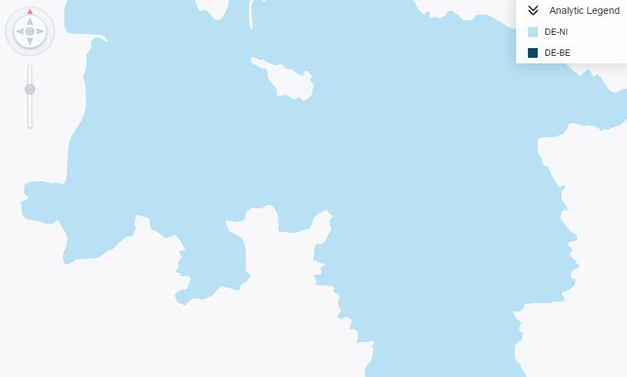
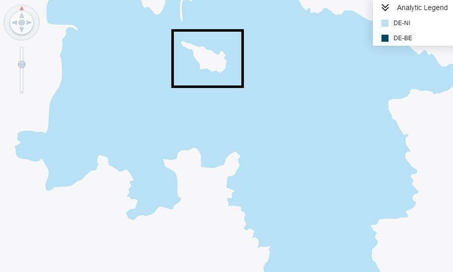
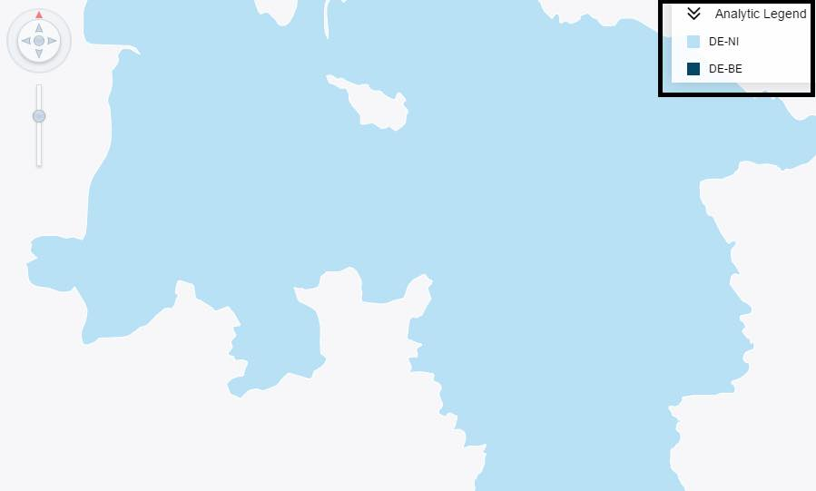
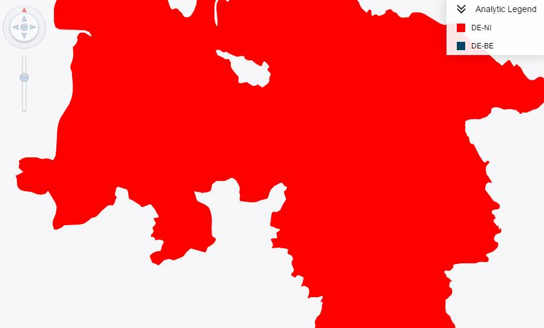
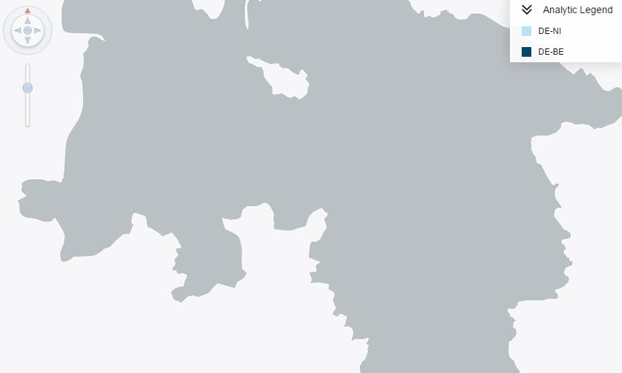
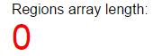
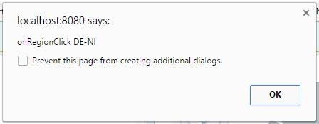

To check that multi-polygon objects with exclusions behave correctly. Exclusions are "holes" in an Area.
To test:
The test on the right consists of a Visual Business AnalyticMap Control with full feature MultiPolygon GeoJSON.
The Area consists of multiple parts, with at least one part containing an exclusion.
Check that an AnalyticMap control has loaded.

Check that the AnalyticMap has at least one exclusion.

Check that there is an Analytic legend on the top right of the AnalyticMap control.

Click the "Change Model" button, and check that the DE-NI region changes its colour to red.

Click the "Remove all Regions" button. This button will call the method removeAllRegions().
The AnalyticMap control should change colour and the regions array should return 0.
If the regions have been removed, the array length should equal 0 (see result below)
Regions array length:


Click on the region on the map and check that an alert box appears which is similar to the image below
